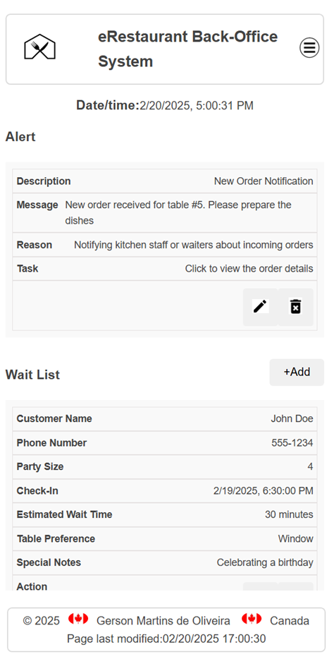
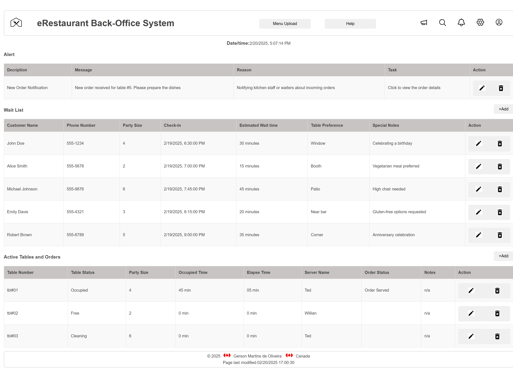

Site Name: eRestaurant
Reason for selection: Choosing "eRestaurante" as my final project makes sense because it is highly relevant to the real world, as many restaurants are shifting to online ordering and digital menus. This project allows me to integrate a variety of features like menus, orders, reservations, and payment systems, showcasing my ability to work with different tools. It’s a great opportunity to practice essential skills like database management, front-end and back-end development, and UI/UX design. Additionally, the platform can be customized, allowing different restaurants to sign up, create menus, and manage orders based on their needs. The focus on user experience will ensure the site is easy to navigate, visually appealing, and functional. I’ll also design it to be responsive, so it works seamlessly on phones, tablets, and desktops. Beyond just a project, "eRestaurante" could potentially be expanded into a real product that restaurants could use. The creative freedom to experiment with design and features, such as delivery options or customer reviews, makes it an exciting project.
Optional Domain Availability: www.eRestaurant.ca
The purpose of eRestaurante is to provide a comprehensive online platform that streamlines the restaurant experience for both customers and restaurant owners. For customers, it offers an easy-to-navigate interface where they can view menus, place orders, make reservations, and process payments all in one place. For restaurant owners, the platform serves as a tool to manage their menu, process orders efficiently, handle reservations, and track customer preferences. eRestaurante aims to improve customer satisfaction by offering a seamless, convenient experience while helping restaurant owners optimize their operations, increase visibility, and boost sales. Ultimately, the goal of eRestaurante is to bridge the gap between technology and the dining experience, making it easier for customers to enjoy their meals and for restaurants to run smoothly.
Primary Color: #c8c4c3 (used for headings and buttons).
Secondary Color: #ffffff (used for the background and card sections).
These colors will help create a vibrant yet clean layout for the site.
Font 1: Arial, sans-serif (used for the body text and general content).
Font 2: "Roboto", sans-serif (used for headings and navigation menu).
Below is a simple wireframe for the homepage layout:
Mobile View: Header with navigation bar, featured products carousel, product categories, and footer with links.
Desktop View: Similar to mobile view, but with a two-column layout: product listings on the left and promotional banners on the right.
The website will have a clean, modern look using the selected color schema and typography. Basic styling will include a responsive layout for both mobile and desktop devices. Specific CSS styles will be applied to headings, paragraphs, buttons, and navigation elements.
The CSS will also ensure that the layout adjusts to different screen sizes, providing an optimal experience on both mobile and desktop devices.
We will test the website for the following: